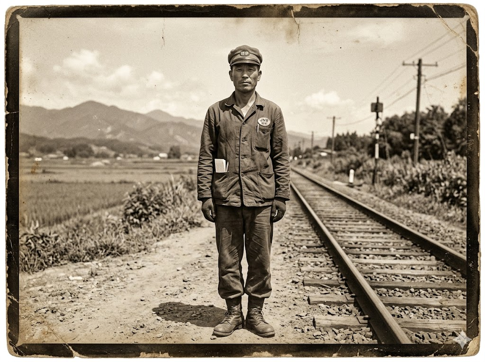

// 復元済：72% ── 退色により細部不鮮明
// PHOTO DATA ── 表面スキャン

［画像：猫塚清治（推定）昭和二十四年 M川付近］
※ 実装時に photo_koaru.jpg を同フォルダに配置してください
昭和二十四年 M川付近（推定）
// PHOTO DATA ── 裏面スキャン
検閲
済
// 手書き文字（インク）── 復元
猫塚 清治
昭和二十四年八月 M川付近にて
── この人は、ここにいた。
生きている。消えていない。
忘れないでください。
// ANALYSIS ── 画像解析メモ
[服装]国鉄作業服に近い形状。胸ポケットに何か差し込んでいる。
[背景]線路脇の草地。遠景に山。
── 福島盆地周辺と一致（推定）
[表情]正面を向いている。姿勢は真っ直ぐだ。
[注記]この写真を撮ったのは誰か。
── 蛸川氏の所持品であったことを考えると……
// NEXT ── 関連ファイルへ
05_photo.dat ──
M川駅跡 過去ト現在
// → photo_002.html
*このアーカイブに登場する人物・事件・団体はすべて架空です。実在の地名は物語の舞台として使用しており、当該地域・施設の名誉を傷つける意図はありません。